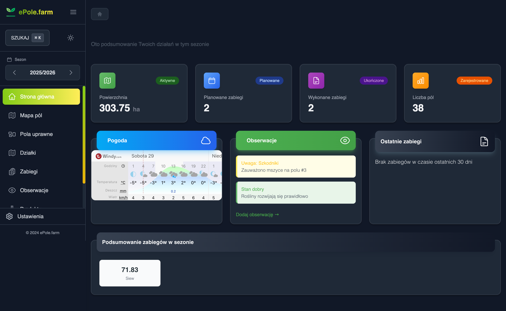
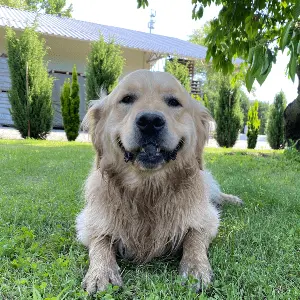

Co potrafi ePole?
Jedno narzędzie zamiast stosu kartek
Pola i działki
Dodawaj pola ręcznie lub importuj z eWniosku (portal, CSV, GML) albo po numerze działki. Mapa, historia pola i scalanie pól.
Zabiegi agrotechniczne
Zapisuj opryski, nawożenie, siewy i zbiory. Przypisuj produkty i nawozy z dawkami, sprzęt i operatorów. Prowadź pełny dziennik zabiegów na każdym polu.
Raporty
Uprawy, odmiany, pola, dzierżawy, opryski, ubezpieczenia, maszyny i bilans składników — gotowe zestawienia jednym kliknięciem.
Obserwacje polowe
Notuj stan pola z lustracji i dodawaj zdjęcia. Każda obserwacja powiązana z konkretnym polem.
Ceny skupu
Śledź ceny płodów rolnych od skupów (m.in. Woźniak, Agromax, Arteo). Historia, porównanie i ulubione.
Środki ochrony i nawozy
Katalog środków ochrony roślin z substancjami czynnymi, dawkami i okresami karencji oraz nawozów ze składem NPK. Dodawaj własne produkty.
Pomiary gleby
Kreator prowadzi krok po kroku: wybór pól, anality, automatyczne punkty poboru z GPS i wyniki laboratoryjne.
Zespół i dokumenty
Organizacje, gospodarstwa i sezony. Zapraszaj członków, nadawaj role, przechowuj dokumenty i znaczniki na mapie.
Zainstaluj jak aplikację mobilną
ePole to PWA (Progressive Web App) — zainstaluj bezpośrednio na telefonie, tablecie lub komputerze. Bez sklepu z aplikacjami, bez aktualizacji. Działa wszędzie, gdzie masz przeglądarkę.
Tak to wygląda
Prosty interfejs — bez zbędnych komplikacji

Cennik
Wszystkie ceny netto
Darmowy
na zawsze
- Zarządzanie polami i działkami
- Import z eWniosku (portal, CSV, GML) i po numerze działki
- Dziennik zabiegów z produktami i dawkami
- Katalog środków ochrony roślin i nawozów
- Raporty: uprawy, opryski, ubezpieczenia, maszyny, bilans składników
- Obserwacje polowe ze zdjęciami
- Pomiary gleby i znaczniki na mapie
- Tracker cen skupu (Woźniak, Agromax, Arteo)
- Rejestr sprzętu i operatorów
- Zaproszenia i dostęp dla wielu użytkowników
Plus
miesięcznie
2 miesiące gratis
- Wszystko z planu darmowego
- Przechowywanie dokumentów w chmurze
- Brak reklam
- Wsparcie rozwoju projektu
O nas
Ludzie za ePole.farm
Wojtek
CEO & pomysłodawca
Zrobiłem to dla siebie, bo miałem dość tracenia czasu na dokumentację. Teraz używam tego w swoim gospodarstwie.

Borys
Główny developer
Koduję to wszystko i staram się, żeby działało szybko i bez błędów. Wof wof.
Najczęstsze pytania
Wszystko, co warto wiedzieć przed startem
Czym jest ePole? +
ePole to aplikacja dla rolników do zarządzania gospodarstwem w jednym miejscu: działki i pola uprawne z mapą, dziennik zabiegów agrotechnicznych, obserwacje, pomiary gleby, katalog środków ochrony roślin i nawozów, raporty oraz tracker cen skupu. Działa w przeglądarce oraz jako aplikacja mobilna (PWA).
Ile kosztuje ePole? +
ePole ma darmowy plan na zawsze, który obejmuje zarządzanie polami, dziennik zabiegów, katalog środków ochrony i nawozów, obserwacje, pomiary gleby, raporty i tracker cen skupu. Plan Premium (50 PLN/mies. lub 500 PLN/rok netto) dodaje przechowywanie dokumentów w chmurze, brak reklam i wsparcie rozwoju projektu.
Czy ePole działa na telefonie? +
Tak. ePole to Progressive Web App (PWA) — można je zainstalować bezpośrednio na telefonie, tablecie lub komputerze bez sklepu z aplikacjami. Działa wszędzie, gdzie masz przeglądarkę.
Czy mogę zaimportować pola z eWniosku? +
Tak. Pola można dodać ręcznie lub zaimportować z portalu eWniosek, z pliku CSV lub GML z eWniosku albo po numerze działki. Dostępny jest też import obejmujący wszystkie sezony naraz oraz historia importów.
Jakie raporty mogę wygenerować w ePole? +
ePole generuje raporty jednym kliknięciem: uprawy, odmiany, pola, pola dzierżawione, opryski, ubezpieczenia, maszyny, bilans składników pokarmowych oraz odżywienie gleby. Dostępny jest też przegląd gospodarstwa.
Czy ePole obsługuje pomiary gleby? +
Tak. Kreator pomiarów gleby prowadzi krok po kroku: wybór pól, definicja analitów, automatyczne wygenerowanie punktów poboru z GPS oraz wprowadzenie wyników laboratoryjnych. Dane trafiają do raportu odżywienia gleby.
Co zawiera katalog środków ochrony roślin i nawozów? +
Katalog środków ochrony roślin zawiera substancje czynne, dawki i okresy karencji, a katalog nawozów — skład NPK. Można też dodawać własne produkty.
Czy potrzebuję karty kredytowej, żeby zacząć? +
Nie. Rejestracja zajmuje minutę, bez karty i bez zobowiązań. Plan darmowy jest dostępny na zawsze.